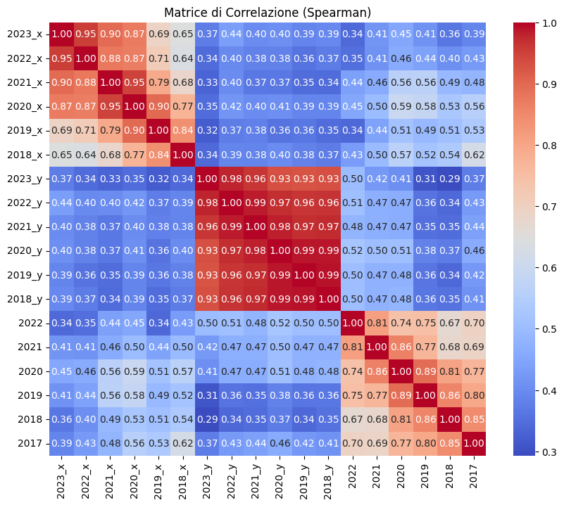
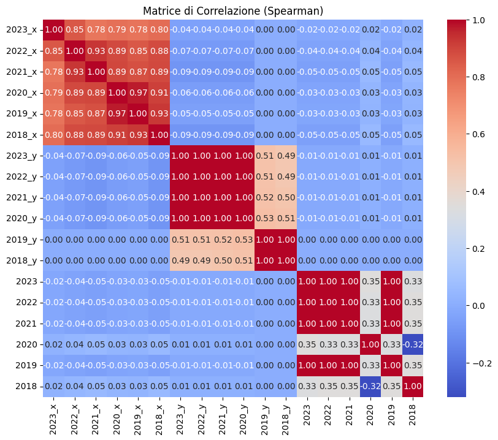
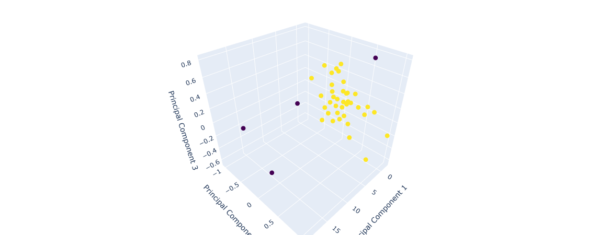
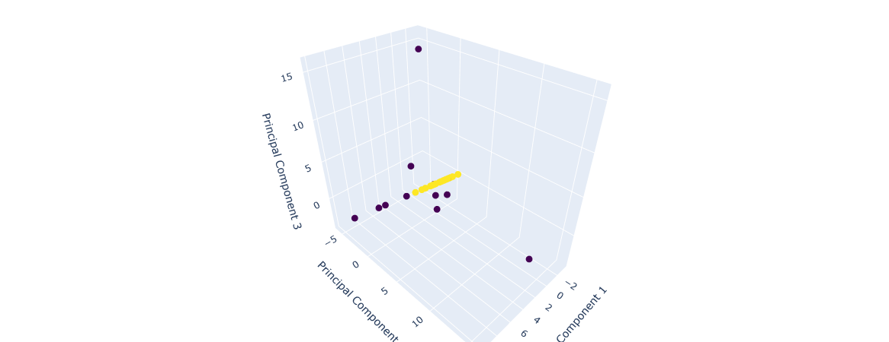
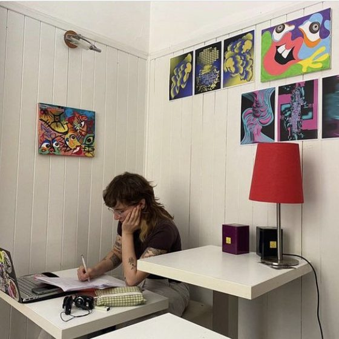

Women in Power and Decision-Making in the EU · an open data project, 2023/24
How do the levels of representation of women in different decision-making positions correlate within the European Union?
Is there a discernible pattern or trend in the relationships between women occupying various roles, and how have these correlations evolved over time?
- Areas where women hold half the seats, latest year
- 0 of 6All six headline series sit below 50%.
- Leaders of major political parties in the EU-27 who are women, 2023
- 26.8%44 of 164 leaders. 16.0% in 2017.
- Judges at the European Court of Justice who are women, 2023
- 6 of 2722.2%, up from 5 of 28 in 2017.
- Closest to parity: board members of research funding organisations, 2023
- 43.1%379 of 880 members, EU-27.
Every figure on this page is computed in your browser as women ÷ total × 100 from EIGE headcounts, and matches EIGE's own “percent of total” to one decimal. How the numbers are made.
Approach
wipEU looks at how the presence of women in positions of power and decision-making in the EU relates across different roles, and how that relationship has changed over time.
The project examines the factors that shape who holds influence in the EU, with an emphasis on how these dynamics develop across different periods: progress, persistent gaps and the trends behind them. The aim is to add evidence to discussions, policies and actions for gender equity in European decision-making. Alongside the research question, the project examines open data itself: its quality, legality, ethics and technical form.
- D2Public administrationEuropean agencies
- D1Business & financeEU financial institutions
- D6PoliticsMajor political parties
- D4Environment & climate changeNational environment ministries
- D3Education, science & researchResearch funding organisations
- D5Law & institutionsEuropean courts
Findings
Every area moved towards parity. None reached it.
Share of women in one headline role per area, EU level. The line at 50% marks parity.
Show the values as a table
Change since 2017
Percentage-point change from 2017 to the latest year EIGE published for each series (2023, or 2022 for environment ministries). Politics, finance and environment gained ten points or more; the agencies and the Court of Justice moved about four.
The smallest bodies move in large steps. The three EU financial institutions (ECB, EIB, EIF) had no woman as president or chair in any year from 2003 to 2019; one in 2020, 2021 and 2022; two of three in 2023.
Across Europe
Three datasets are reported country by country. Choose one, a role and a year.
Grey countries have no value for the selected year: they are outside EIGE's coverage, or EIGE did not publish the figure. The United Kingdom and non-EU EEA and candidate countries are included where EIGE reports them. Country-level bodies are small (a country may have three to eight major parties), so one appointment can move a country's share by twenty points or more.
Inside EU institutions
Three datasets describe EU-level bodies rather than countries. Pick a body and a role to follow the share of women over time.
Show the values as a table
Method & analyses
How the numbers are made
- Source. Six datasets downloaded in January 2024 from the Women and men in decision-making section of EIGE's Gender Statistics Database, as .csv and .json. Each was split into women, men and total tables: 18 source files.
- Share. For every body, role and year: share of women = women ÷ total headcount × 100, rounded half up to one decimal. The script
scripts/build_web_data.pychecks each value against EIGE's published percentage: all match. - Change. The difference between two shares, in percentage points (pts), for example 26.8% − 16.0% = +10.8 pts.
- EU level. Country datasets use EIGE's EU-27 (from 2020) aggregate. Institution datasets use EIGE's Total across bodies; the Court of Justice series uses the European Court of Justice alone.
Two mashup datasets
The team built two mashups, separated by the parameter that organises them. MD1 joins the country-level data (space): countries are the rows, suited to maps and spatial analysis. MD2 joins the organisation-level data (time): EU agencies and bodies are the rows, suited to timelines and change over time. Keeping them apart let each follow its own structure and visualisation technique, geoJSON and choropleths for one and temporal charts for the other, while leaving room to combine the spatial and temporal views of EU structures.
Correlations and clusters
Correlation measures how strongly two variables change together; it does not imply causation. The team used Spearman's rank correlation, which captures monotonic relationships without assuming a straight line. Clustering groups data points with similar characteristics, here countries and agencies with similar temporal patterns. The documentation reports high correlations within the same category across years, varied correlations between categories in the same year, and some negative year-to-year correlations, where a rise in one category coincides with a fall in another.




Four analyses of the data
Together these support the trustworthiness, usability and ethical handling of the EIGE data for research, policymaking and advocacy. Full reports are in the documentation.
- Quality
- Reliability, accuracy, completeness and relevance of the data.
- Legal
- Compliance of the EIGE datasets with relevant laws and regulations.
- Technical
- Structure, format and accessibility of the datasets.
- Ethical
- Implications of data collection, use and dissemination.
What the data cannot show
The datasets record only women and men. That binary leaves out queer and non-binary people, whose presence in decision-making is not measured at all. Data reflects the categories of the society that collects it, and those categories can marginalise the people they fail to count. This limit is a prompt to ask not only what is measured but what is left unmeasured, and to call for more inclusive data collection.
Data & downloads
Source datasets
- Source type
- Data collected by EIGE
- Source organisation
- European Institute for Gender Equality (EIGE), eige.europa.eu
- Statistical activity
- Data collection on women and men in decision-making (WMID)
- Data type
- Administrative data
- Harmonised
- At EU level
- Licence
- CC BY 3.0 Unported
These fields are the same for all six datasets. Each download is a .zip of the women, men and total tables in .csv and .xlsx.
| Code | Dataset | Source reference | Years in repo | Download |
|---|---|---|---|---|
| D1 | European financial institutions: presidents and members | Collected by EIGE from January 2017; previously by the European Commission, DG Justice | 2003–2023 | .zip |
| D2 | European agencies: presidents, members and executive heads | Collected by EIGE from January 2017; previously by the European Commission, DG Justice | 2003–2023 | .zip |
| D3 | Research funding organisations: presidents and members | First collected by EIGE in 2017. 3,360 values | 2017–2023 (2023 partial) | .zip |
| D4 | National ministries dealing with environment and climate change: ministers by seniority (listed on the earlier site as European agencies working in climate change) | Collected by EIGE from January 2017; previously by the European Commission, DG Justice. Time form: years | 2012–2022 | .zip |
| D5 | European courts: presidents and members | Collected by EIGE from January 2017; previously by the European Commission, DG Justice. Time form: years | 1999, 2003–2023 | .zip |
| D6 | Major political parties: leader and deputy leaders | First collected by EIGE in 2017. Time form: years | 2011–2023 | .zip |
Mashup datasets
| Code | Dataset | URI | Years | Download |
|---|---|---|---|---|
| MD1 | Influential positions held by women in different geographical regions | https://github.com/matteo-guenci/Open_access_project/blob/main/data/mashup/merged_df_final.csv | 2018–2023 | .csv |
| MD2 | Influential positions held by women in different agencies | https://github.com/matteo-guenci/Open_access_project/blob/main/data/mashup/merged_df_final2.csv | 2018–2023 | .csv |
Both mashups: statistical activity WMID, administrative data, licensed CC BY 4.0 International. Their metadata is described in RDF (DCAT-AP-IT), a machine-readable format for their details, relationships and attributes: catalogue, MD1, MD2. The documentation gives a full overview.
Documentation
The full project documentation is a Jupyter Notebook. It includes:
- An overview of open access and digital ethics in the project
- Sources and methodology of the governmental datasets used
- Detailed visualisations of gender representation
- Key findings and trends
- Recommendations for promoting gender equality in European institutions
Credits
-
Salvatore Di Marzo
Project ideation, data retrieval, mashup datasets, technical analysis
-
Matteo Guenci
Project ideation, data retrieval, mashup datasets, technical analysis
-

Alice Picco
Project ideation, data retrieval, visualisations, quality and legal analyses, website development
Course
wipEU is the final project of the Open Access and Digital Ethics course (a.a. 2023/2024), Digital Humanities and Digital Knowledge Master's Degree, Alma Mater Studiorum – University of Bologna.
Sustainability
EIGE's Gender Statistics Database covers the EU, its member states and beyond, and provides evidence to support the European Commission's Strategy on Gender Equality and to help member states monitor progress. wipEU itself is a course project: it is not actively maintained and will not be updated.
Licences
- Source datasets
- EIGE, CC BY 3.0 Unported
- Mashup datasets
- CC BY 4.0 International
- Code
- MIT
- Charts
- D3.js, ISC licence, Mike Bostock
- Typeface
- Instrument Sans, SIL Open Font Licence
- Earlier version
- Built on the HTML5 template “Bizland” by BootstrapMade (MIT), with Leaflet (BSD 2-Clause, © 2010–2023 Volodymyr Agafonkin, © 2010–2011 CloudMade) and Plotly.js (MIT, © 2021 Plotly, Inc.)